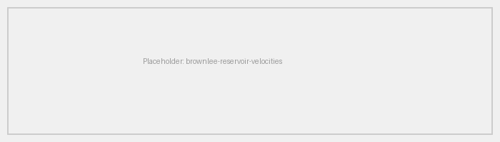
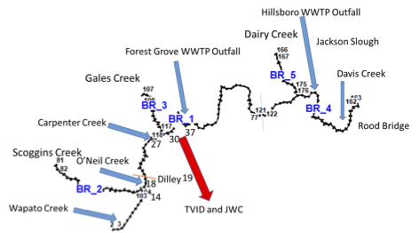
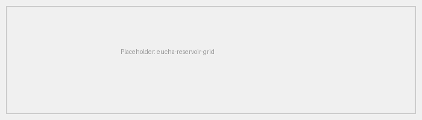

Model Overview and Terminology¶
Overview¶
CE-QUAL-W2 is the U.S. Army Corps of Engineers' (USACE) two-dimensional, longitudinal/vertical, hydrodynamic and water quality model. The model assumes lateral homogeneity, making it best suited for relatively long and narrow waterbodies that exhibit longitudinal and vertical water quality gradients. CE-QUAL-W2 has been applied to rivers, lakes, reservoirs, estuaries, and combinations thereof, including entire river basins with multiple reservoirs and river segments.
What does CE-QUAL-W2 stand for?
The name CE-QUAL-W2 stands for Corps of Engineers - Quality - Width-Averaged 2D. CE-QUAL-W2 was originally developed at the U.S. Army Engineer Research and Development Center (ERDC). Since Version 3.0, Portland State University (PSU) has been a major CE-QUAL-W2 developer, as well as maintaining an active user community. ERDC resumed active development and maintenance of CE-QUAL-W2 in 2020, with research and development funding from the Ecosystem Management and Restoration Research Program (EMRRP) and Aquatic Nuisance Species Research Program (ANSRP). The ERDC V2026 release builds on the foundation of PSU's V4.5 codebase.
The USACE Hydrologic, Hydraulic, and Coastal (HH&C) Community of Practice (CoP) utilizes a specialized set of software engineering tools, primarily developed by the USACE Hydrologic Engineering Center (HEC) and the Engineer Research and Development Center (ERDC). These tools are used for modeling, planning, and designing water resource projects. The Software Engineering Technology (SET) program provides support for maintenance and support of these models. ERDC's responsibilities include user support, bug fixes, documentation, QA/QC, development of a new Graphical User Interface (GUI), annual training workshops, and new feature development.
Typical Applications¶
CE-QUAL-W2 is commonly applied to two broad categories of waterbodies:
- Stratified reservoirs where longitudinal and vertical gradients in temperature, dissolved oxygen, and nutrients are important. An example is Brownlee Reservoir on the Snake River at the Idaho-Oregon border, USA.
- River basins that may or may not include reservoir or lake-like pools. An example is the Tualatin River basin in Oregon, USA, where the model represents the mainstem river and its tributaries as a connected system of branches and waterbodies.
Stratified Reservoir Example¶
The figure below illustrates CE-QUAL-W2 predictions for Brownlee Reservoir. The model captures the plunging inflow of the Snake River as it enters the reservoir and moves downstream as an interflow at an intermediate depth.

River Basin Example¶
The figure below shows the layout of the Upper Tualatin River CE-QUAL-W2 model. This model was composed of 2 waterbodies (BR1--BR3 and BR4--BR5). The mainstem consisted of 2 branches (BR1 and BR4) spanning from River Mile (RM) 62.4 to RM 38.4. Three side branches represented Scoggins Creek (BR2), Gales Creek (BR3), and Dairy Creek (BR5).

Terminology¶
The CE-QUAL-W2 model discretizes a waterbody into a structured grid. The following terms define the components of that grid, from largest to smallest.
Waterbodies¶
A waterbody is a collection of model branches that share the same turbulence closure scheme, water quality parameter values, and meteorological forcing. For example, a model of a river-reservoir system would typically define the reservoir and the river as separate waterbodies, each with its own meteorological input and turbulence closure settings. A single reservoir can also be split into multiple waterbodies where different portions require distinct meteorological forcing.
Branches¶
A branch is a collection of model segments that share a common slope. In a river, separate branches represent reaches with different channel gradients. In a reservoir, sidearms are typically represented as separate branches connected to the mainstem branch.
Segments¶
A segment is a single longitudinal element of length Δx. Segment lengths can vary from segment to segment. Each segment is further divided vertically into layers.
Layers¶
A layer is a single vertical element of height Δz. Layer heights can vary between waterbodies. Within a segment, layers between the bottom elevation and the water surface are active (wet); layers above the water surface are inactive (dry). As the water surface rises or falls during a simulation, layers are added or removed at the top of the water column.
Summary of Grid Hierarchy¶
| Term | Definition | Typical Use |
|---|---|---|
| Waterbody | Collection of branches sharing turbulence closure, water quality parameters, and meteorological forcing | Reservoir and river as separate waterbodies; zones requiring different met stations |
| Branch | Collection of segments sharing a common slope | Mainstem channel, reservoir sidearms, tributaries |
| Segment | Longitudinal element of length Δx (variable) | Horizontal discretization; lengths typically 100--10,000 m |
| Layer | Vertical element of height Δz; active (wet) or inactive (dry) depending on water surface elevation | Vertical discretization; heights typically 0.1--5 m |
Grid Layout Example¶
The figures below illustrate the grid layout for Eucha Reservoir in Oklahoma, USA. This model uses a quasi-3D configuration by representing the reservoir sidearms as separate branches. Each segment contains multiple vertical layers to resolve the vertical structure of the water column.


Quasi-3D Modeling with Branches
Although CE-QUAL-W2 is a 2D (longitudinal/vertical) model, the use of multiple branches to represent sidearms and tributaries creates a quasi-3D representation of the waterbody. This approach is particularly effective for reservoirs with complex geometries where sidearms contribute significant inflows or exhibit distinct water quality conditions. However, a quasi-3D representation does not replace a true 3D model. In some cases, a fully 3D model may be necessary to resolve complex three-dimensional flow patterns.